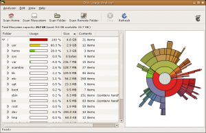
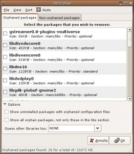
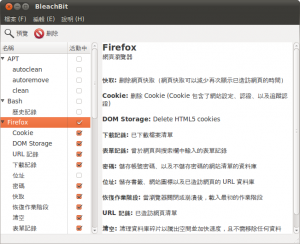

感謝您對「自由軟體鑄造場」的支持與愛護，十多年來「自由軟體鑄造場」受中央研究院支持，並在資訊科學研究所以及資訊科技創新研究中心執行，現已完成階段性的任務。 本網站預計持續維運至 2021年底，網站內容基本上不會再更動。
也紀念我們永遠的朋友 李士傑先生（Shih-Chieh Ilya Li）。
也紀念我們永遠的朋友 李士傑先生（Shih-Chieh Ilya Li）。
清理 Debian/Ubuntu 儲存空間
建立日期 2011-04-21 13:52 最近更新在 2011-04-25 11:54
讀過 Tsung 分享的 「Debian/Ubuntu Linux 空間釋放－清除沒用的檔案」 一文，筆者也來分享一下自己清理作業系統環境的方法。筆者是 Debian GNU/Linux 的長年使用者。Debian 使用者有個壞習慣－不主動定時清理系統。因為 Debian 系統實在太穩定，裝好之後終年難得重灌，久而久之系統就會留下佔用空間的廢棄檔案。這些檔案除了使用者個人資料外，不外乎快取、歷史記錄、設定等等。此外還有曾經安裝的軟體，編譯軟體時所裝的開發函式庫等等。這裡分享幾個常用的清理檔案方法。
Personal data
首先是個人檔案。你有許多目錄，需要先找出佔用最多磁碟空間的目錄。這時候你可以透過指令列用 du 來看 disk usage。常用的參數如下：
du --max-depth=1 -x | sort -n
這個指令的意思是查詢當下目錄所佔用的大小，並依照由小到大的順序排列，-x 的意思是只查詢一個檔案系統，方便你找出單一檔案系統中最大的目錄。你也可以用 -h 讓 du 列出。
如果你不是 geek，我推薦使用 Baobao 。它具備圖形化操作界面，並提供派圖呈現磁碟佔用比例，很容易抓出佔用最多空間的目錄或檔案。另外筆者也建議 KDE 使用者用 Filelight 。

▲ 圖1 圖像來源：Disk Usage Analyzer by Fabio Marzocca
依照筆者的使用經驗，佔用最多空間的檔案往往是電子郵件，因為電子郵件中常常附夾了簡報檔、文件等等。如果已經歸檔結案，我通常會把夾檔刪掉，只留下郵件本文存檔。若你使用的郵件收發軟體是 Evolution，筆者推薦使用筆者寫的外掛程式 evolution-remove-attachments ，來整理及備份電子郵件。
apt-tools cache
從最簡單的系統安裝設定開始，系統就已經裝了許多你用不著的檔案。第一個常見的就是各國語系的說明文件與翻譯，絕大多數使用者不會去看其他語言的說明文件，像是我從來沒讀過法文、甚至日文、韓文的 man pages ，也不會使用這些語系的使用界面。而大部分軟體因為國際化的關係，往往裝了數國翻譯，如果是 OpenOffice、GNOME 或 KDE 這些大型軟體計劃，佔用的空間還不少呢。這時，推薦使用者安裝 localepurge 來移除不需要的語系。第一次安裝 localepurge 時，系統會問你要保留哪些語系，回答過一次後，未來每次透過 apt/aptitude 安裝套件時，它都會自動清理一次。下載後的 deb 安裝檔常常也佔用很大空間，特別是 OpenOffice、Xorg、kernel 等等。如果你常常升級系統，不知不覺系統就會存下很多暫存的 deb 安裝檔。這時，你可以用 apt-get 來清除它們。
# apt-get autoclean
# apt-get clean
其中 autoclean 是清掉舊版的 deb，系統會保留一份最新版本安裝檔。我個人都使用 autoclean 指令，以免發生意外的時候，沒有最新版本的 deb 檔可以重新安裝。一般使用者可以直接以 clean 清除快取。
apt-tools dependency
使用 Linux 時，或多或少會自己編譯一些軟體，需要編譯軟體時，就會需要相關的開發函式庫。但常常裝完砍掉後，這些相關的開發函式庫還留在系統中變成軟體孤兒。你除了應該儘量用 apt-get autoremove 或 aptitude 外，也可以用 deborphan 來找軟體孤兒。最常見（也很危險）的用法如下：
# aptitude remove $(deborphan --nice-mode --guess-all)
這樣 deborphan 會推估所有系統中不需要的程式，並全部移除。你也可以用以下指令找出最佔用空間的套件：
$ deborphan -a -n|sort -n
懶惰的話，你也可以裝 GtkOrphan，以圖形化界面管理。

▲ 圖2 使用 GtkOrphan 圖形化管理硬碟空間。
BleachBit (CCleaner for Linux)
雖然新的 Linux 軟體，已經逐漸使用 .local、.cache、.config 等目錄設定方式，但是還是有許多軟體會把快取存在 .config 或自己的目錄中，像是 .gnome2、.firefox 等。結果是使用者很難找到快取檔案。若使用 UbuntuOne、Dropbox 等等雲端備份工具，常常連不重要的快取都一起備份了，費時費錢。上述指令或工具，看似十分繁複，而且只能管理系統檔案。從 Windows 跳船過來的使用者一定會想，是否有類似 CCleaner 的工具，用手指點一點，就可以把垃圾檔案清乾淨？
那麼，筆者建議你使用同時具有 Windows 及 Linux 版本的 BleachBit 。BleachBit 設計了一套相當有彈性的設定描述語言— CleanerML，支援許多常見軟體的清除功能，非常類似 CCleaner，可以自動偵測可清除的軟體列表，接著只要點選需清除的檔案類型，BleachBit 就會自動刪除並計算所騰出空間。沒有 X 圖形界面時，也可以用 bleachbit_cli 指令列。

▲ 圖3
References
如果你很 Geek，可以參考 Ubuntu Wiki 上的 Reducing Disk Footprint ，上面分享了許多縮減系統大小的技巧。另外 Ubuntu 計劃要削減安裝光碟容量大小，未來新版 Ubuntu 11.04 Natty 將會採用，也會影響系統安裝後佔用記憶體的量。
作者簡介
蔡志展 (Rex Tsai) 或網名 chihchun，現為自由工作者，從事開源軟體顧問或開發服務。倡議並推廣自由軟體與開放源碼，早期 KaLUG 成員，現常出席 Tossug、 HackingThursday 聚會，亦是開源人年會 (COSCUP) 籌備志工。長期 Debian、OpenWrt 使用者。關注議題甚廣，進一步資訊請參考 https://people.debian.org.tw/~chihchun/。專欄總覽


自由軟體鑄造場 製作 最佳瀏覽狀態：IE7或Firefox2.0以上 (建議使用Firefox) ‧ 解析度1024*768
E-Mail：contact@openfoundry.org Address：台北市南港區研究院路2段128號 中央研究院資訊科學研究所 . 隱私權條款. 使用條款
E-Mail：contact@openfoundry.org Address：台北市南港區研究院路2段128號 中央研究院資訊科學研究所 . 隱私權條款. 使用條款
評論